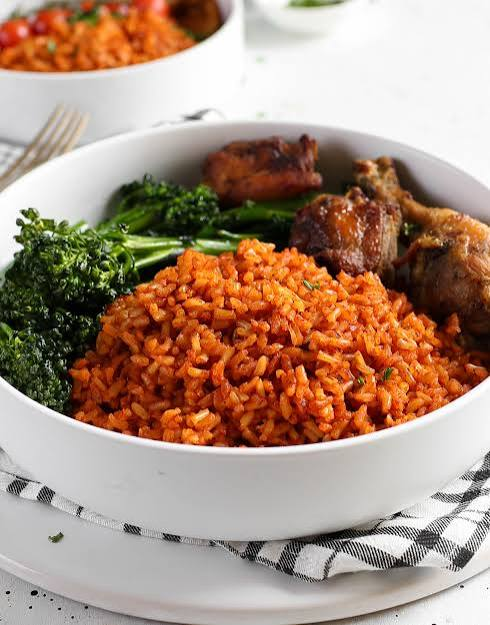

Jollof

A plate of delicious Ghanaian jollof
Ghanaian jollof is rich, smoky, and deeply savory, the kind of one-pot meal that shows up at every celebration, Sunday lunch, and family gathering. It starts with a flavorful base called tomato stew made from blended tomatoes, bell peppers, onions, and garlic, fried down in vegetable oil until the oil floats to the top. To that we add ginger, bay leaves, thyme, curry powder, and the signature Ghanaian touch: a blend of local spices and sometimes a little bit of pepper for heat. Long-grain rice is then stirred into the stew so every grain gets coated before stock or water is poured in. The pot is covered tightly and left to simmer slowly, allowing the rice to absorb all that color and flavor while developing the beloved party jollof taste.
What makes Ghanaian jollof stand out is the patience in the cooking and the smoky aroma at the end. Unlike boiled rice, the grains come out separate but soft, tinted a deep red-orange from the tomato base and spices. It is often cooked over charcoal or on low heat to get that subtle smoky bottom known as kanzo. Served with fried plantain, coleslaw, grilled chicken, or beef, Ghanaian jollof is not just food, it is community. Every cook has their own version, but the goal is always the same: bold flavor, vibrant color, and a pot that disappears fast.
Ingredients
- Rice
- Tomatoes
- Red bell pepper
- Onions
- Garlic
- Ginger
- Vegetable oin
- Tomato paste
- Chicken or beef stock
- Bay leaves
- Thyme
- Curry powder
- Mixed herbs
- Salt
Steps
- Blend the tomatoes, red bell peppers, scotch bonnet, 2 onions, garlic, and ginger until smooth.
- Pour into a pot and boil on medium heat for 15-20 mins until the water reduces and it becomes thick. This removes the raw tomato taste.
- In a large heavy pot, heat the vegetable oil on medium heat. Add the sliced onion and saute for 2 mins until fragrant.
- Add tomato paste and fry for 5 mins until it darkens.
- Pour in the boiled tomato pepper mix. Add bay leaves, thyme, curry powder, mixed herbs, and seasoning cubes.
- Fry this stew for 20-25 mins, stirring occasionally, until oil starts floating to the top. This is what gives Ghana jollof its rich flavor.
- Rinse the rice 2-3 times until water runs clear. Drain well.
- Pour in the hot chicken/beef stock. Taste and adjust salt.
- Add the drained rice and stir gently so every grain is coated in the stew.
- Cover the pot tightly with foil + lid to trap steam. Reduce heat to low and cook for 30-35 mins. Do not stir.
- After 30 mins, check if the rice is soft and water is absorbed. If there is still liquid, cook 5 more mins.
- For the signature smoky party flavor, increase heat slightly for 5-7 mins at the end. You will smell it and hear a light crackle. That is the kanzo at the bottom.
- Fluff gently with a fork. Remove bay leaves.
- Serve hot with fried plantain, coleslaw, and grilled chicken, beef, or fish.